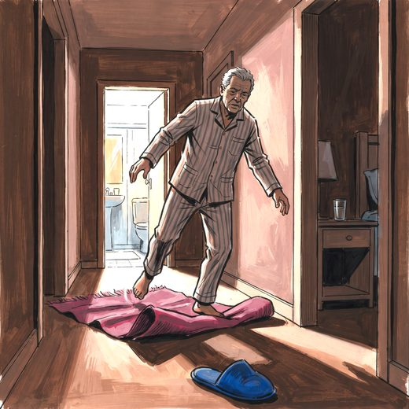

Ferramenta desta aula
Carga anticolinérgica. Roda no navegador, sem cadastro.
Consulta rápida à beira do leito
Condutas, doses e interações.
Referências da aula · 15
- Afya Whitebook. Iatrogenia e polifarmácia no idoso. Acesso em outubro de 2026.
- Cosgrave N, et al. Hospital admissions due to adverse drug reactions and adverse drug events in older adults: a systematic review. Age Ageing. 2025. doi:10.1093/ageing/afaf231.DOI
- Restelli A, et al. Prescribing cascades among hospitalized older adults: a retrospective cohort study from the REPOSI registry. Intern Emerg Med. 2026. doi:10.1007/s11739-026-04338-6.DOI
- Carollo M, et al. Clinical impact of medication review and deprescribing in older inpatients: a systematic review and meta-analysis. J Am Geriatr Soc. 2024. doi:10.1111/jgs.19035.DOI
- Linsky A, et al. Deprescribing in community-dwelling older adults: a systematic review and meta-analysis. JAMA Netw Open. 2025. doi:10.1001/jamanetworkopen.2025.9375.DOI
- Seppala LJ, Wermelink AMAT, de Vries M, et al. Fall-risk-increasing drugs: a systematic review and meta-analysis: II. Psychotropics. J Am Med Dir Assoc. 2018;19(4):371.e11-371.e17. PMID 29402652. doi:10.1016/j.jamda.2017.12.098.PubMedDOI
- Goldberg TE, Chen C, Wang Y, et al. Association of delirium with long-term cognitive decline: a meta-analysis. JAMA Neurol. 2020;77(11):1373-81. PMID 32658246. doi:10.1001/jamaneurol.2020.2273.PubMedDOI
- American Geriatrics Society Beers Criteria® Update Expert Panel. AGS 2023 updated Beers Criteria® for potentially inappropriate medication use in older adults. J Am Geriatr Soc. 2023;71(7):2052-81.
- Pirmohamed M, James S, Meakin S, et al. Adverse drug reactions as cause of admission to hospital: 18 820 patients. BMJ. 2004;329(7456):15-9.
- Covinsky KE, Palmer RM, Fortinsky RH, et al. Loss of independence in activities of daily living in older adults hospitalized with medical illnesses. J Am Geriatr Soc. 2003;51(4):451-8.
- Witlox J, Eurelings LS, de Jonghe JF, et al. Delirium in elderly patients and the risk of postdischarge mortality, institutionalization and dementia. JAMA. 2010;304(4):443-51.
- Tinetti ME, Naik AD, Dindo L, et al. Association of patient priorities-aligned decision-making with patient outcomes among older adults with multiple chronic conditions. JAMA Intern Med. 2019;179(12):1688-97.
- Katz S, Ford AB, Moskowitz RW, Jackson BA, Jaffe MW. Studies of illness in the aged. The index of ADL. JAMA. 1963;185:914-9.
- Lawton MP, Brody EM. Assessment of older people: self-maintaining and instrumental ADL. Gerontologist. 1969;9(3):179-86.
- Watanabe JH, McInnis T, Hirsch JD. Cost of prescription drug-related morbidity and mortality. Ann Pharmacother. 2018;52(9):829-37. PMID 29577766. doi:10.1177/1060028018765159.PubMedDOI
Documentos oficiais
Leis e publicações do Ministério da Saúde sobre o cuidado da pessoa idosa, de acesso livre.
Abrir os documentos